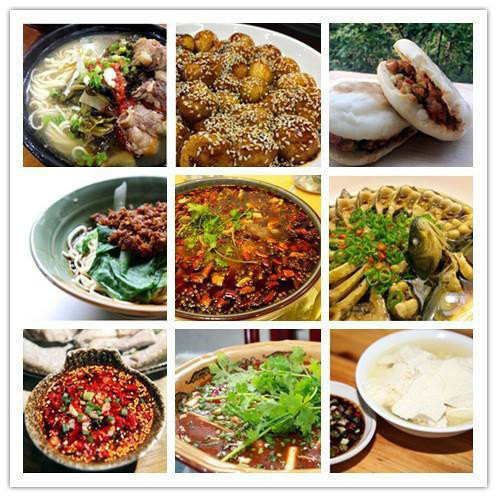

成都美食
火锅，一群人的狂欢！ 成都，是一座有味道的城市，这个味道就是火锅味儿！到成都旅游，体验一下成都 火锅那是必须的！成都总共有5000多家火锅店，适合高富帅的如皇城老妈、大妙，人均 消费200左右，优点是环境霸道，有四川特色，缺点你懂的...贵，就一个字！适合中间阶 层的火锅就多了，比较知名的如蜀九香、香天下、老码头等，人均消费100左右，本地人招待朋友多选择这些；适合大众消费的火锅就遍地都是了，比如一号桥老灶、三只耳、川西坝子等。成都火锅总体来说味道都不错，选择吃火锅的办法也很简单，走在成都街头看哪家火锅店排队最长进哪家准没错。 2串串，几个人的狂欢！火锅，是一群人的狂欢；串串，则是一个人的狂欢！串串，顾名思义就是把肉和菜串起来吃的意思。这种发端成都的美食，这几年也开始流传到全国各地，但最资格的味道必须在成都！据说，成都人每年吃的串串数量连起来可以往返地球五圈半！足见成都人对串串的热爱！ 3小食，逛吃逛吃中长成胖纸！ “如果你爱她，就让她到成都，因为她会感受到作为吃货的幸福；如果你恨她，也让她到成都，因为不出一个月她绝对会成为一个胖纸！”成都，作为吃货之城，除了川菜、火锅和串串外，为数众多覆盖全城的小吃那必须是吃货的最爱！不过，因为好吃的太多了，而各位客官时间毕竟有限，所以小编就只给大家介绍最值得尝试的小食啦！ 